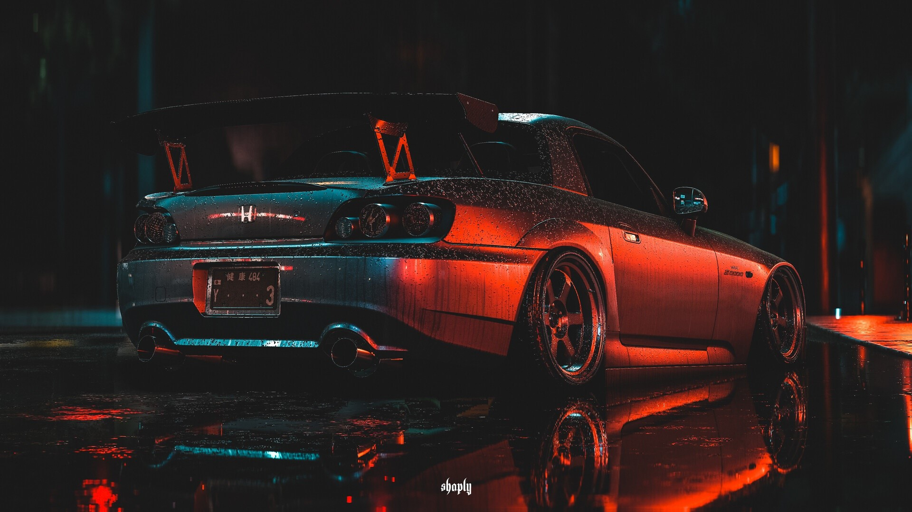

ЯПОНИЯ
СТАТЬЯ О ТОМ КАК ЯПОСНКИЙ СТИЛЬ ГОНОК СТАЛ ПОПУЛЯРЕН ВО ВСЕМ МИРЕ
СТАТЬЯ О ТОМ КАК ЯПОСНКИЙ СТИЛЬ ГОНОК СТАЛ ПОПУЛЯРЕН ВО ВСЕМ МИРЕ

По всему миру существуют нелегальные уличные гонки. И по аналогии есть обычный стрит-рейсинг, а в японии, есть его тёмный "аналог" и это Kanjozoku. Слово аналог не просто так написано в кавычках, потому что аналогом стрит-рейсинга это сложно назвать, а точнее, лучше никогда этого не делать.
Они петляют между машин, они затормаживают движение, устраивают вечерние погони с полицией, очень много шумят, создавая хаос на дорогах. Автомобили, впрочем, как и всегда достойны отдельного внимания. В таких заездах чаще всего принимали участие автомобили марок: Toyota, Nissan, Mitsubishi, Honda.
Итак, как же выглядят спортивные японские авто.

На Японском рынке машина называлась Nissan Fairlady Z. После ухода модели 300ZX с американского рынка в 1996 году, руководство Nissan планировало его заменить вновь созданным 240Z, спроектированным североамериканским дизайнерским отделением Nissan в свободное от основной работы время. Концепт-кар был создан в июле 1998 года и показан журналистам и дилерам.
Toyota Mark II - четырёхдверный спортивный среднеразмерный седан,
выпускавшийся компанией Toyota с 1968 по 2004 годы. Наименование Mark II использовалось компанией Toyota на протяжении нескольких десятилетий и первоначально использовалось в составе названия Toyota Corona Mark II.
Отметка II была введена, чтобы машина выделялась из основной платформы Toyota Corona.
Как только в 1970-е годы платформа была разделена, автомобиль стал известен просто как Mark II.


Mitsubishi Lancer Evolution, или Mitsubishi Lancer Evo — спортивный вариант Mitsubishi Lancer, производившийся с 1992 по 2015 год. Выполнен в кузове седан (IX поколение выпускалось также с кузовом универсал). Внешне отличается от стандартного Lancer бампером, капотом, спойлером, расширенными крыльями. Имеет более мощный турбированный двигатель (до 10-го поколения ставился 4G63), более жесткий кузов, полный привод, механическую, автоматическую или роботизированную КПП с двумя сцеплениями. Автоматические коробки передач ставились на Evolution 7 GT-A и Evolution 9 универсал, роботизированная КПП ставится на Evolution 10. Cуществует 10 поколений Mitsubishi Lancer Evolution.
Honda S2000 — спортивный автомобиль в кузове родстер, выпускавшийся компанией Honda с 1999 по 2009 года. Концепт автомобиля был впервые показан еще в 1995 году, на Токийском автосалоне. Начало выпуска серийного автомобиля было приурочено к 50-летию компании, также он явился продолжением серии родстеров S500, S600 и S800. Название S2000 подчёркивает объём двигателя в два литра, и является традицией для родстеров, начиная с 1960-х годов.
